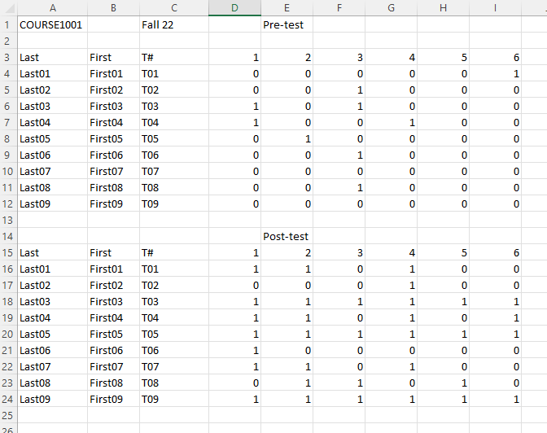

import pandas as pd4 Package: pandas
The basic data structure for pandas is pandas.DataFrame. You may treat it as a generalized version of tables.
To use pandas, we just import it. In most cases you would like to use the alias pd.
Since DataFrame is more like a table, the biggest questions here is not to do computations (which is still very important), but to retrieve, search, sort, merge, etc.. those data.
4.1 Basic pandas
4.1.1 Series and DataFrame
A Series is a 1-d array-like object which has index. The default index is starting from 0. You may change the index to be something assigned by you. Thus it can be treated as a generalization of a dict.
obj = pd.Series([3, 1, 2, 4])
obj0 3
1 1
2 2
3 4
dtype: int64obj2 = pd.Series([3, 1, 2, 4], index=['a', 'b', 'c', 'd'])
obj2a 3
b 1
c 2
d 4
dtype: int64data3 = {'a': 3, 'b': 1, 'c': 2, 'd': 4}
obj3 = pd.Series(data3)
obj3a 3
b 1
c 2
d 4
dtype: int64A DataFrame represents a rectangular table of data and contains an ordered collection of columns, each of which can be a different value type. The DataFrame has both a row and column index; it can be thought of as a dict of Series all sharing the same index. When displaying a DataFrame, we may use .head() to just display the first few rows for efficicy.
import pandas as pd
data = {'a': [1, 2, 3, 4, 5, 6, 7],
'b': [1.1, 2.1, 3.1, 4.1, 5.1, 6.1, 7.1],
'c': ['a', 'b', 'c', 'd', 'e', 'f', 'g']}
df = pd.DataFrame(data)
df.head()| a | b | c | |
|---|---|---|---|
| 0 | 1 | 1.1 | a |
| 1 | 2 | 2.1 | b |
| 2 | 3 | 3.1 | c |
| 3 | 4 | 4.1 | d |
| 4 | 5 | 5.1 | e |
4.1.2 Decorations
A Series or a DataFrame might have named row indexes and column names. I collect some tools for you to play with them and list them below.
Setting when creating
We may use the setting columns= or index= to change the column names and the index names. See the following example.
import numpy as np
import pandas as pd
data = pd.DataFrame(np.arange(16).reshape((4, 4)),
index=['Ohio', 'Colorado', 'Utah', 'New York'],
columns=['one', 'two', 'three', 'four'])
data| one | two | three | four | |
|---|---|---|---|---|
| Ohio | 0 | 1 | 2 | 3 |
| Colorado | 4 | 5 | 6 | 7 |
| Utah | 8 | 9 | 10 | 11 |
| New York | 12 | 13 | 14 | 15 |
.rename()
We may use the .rename() method. Note that by default the return value of this method is a copy and it won’t affect the original DataFrame. The arguments can be in many different formats. Please see the official document for more details.
If you want to directly make the change, please use the argument inplace=True.
The following example shows the standard way to rename.
df = pd.DataFrame(np.arange(16).reshape((4, 4)))
df.rename(columns={0: 'zero'}, index={2: 'two'})| zero | 1 | 2 | 3 | |
|---|---|---|---|---|
| 0 | 0 | 1 | 2 | 3 |
| 1 | 4 | 5 | 6 | 7 |
| two | 8 | 9 | 10 | 11 |
| 3 | 12 | 13 | 14 | 15 |
However the orginal df is not affected.
df| 0 | 1 | 2 | 3 | |
|---|---|---|---|---|
| 0 | 0 | 1 | 2 | 3 |
| 1 | 4 | 5 | 6 | 7 |
| 2 | 8 | 9 | 10 | 11 |
| 3 | 12 | 13 | 14 | 15 |
If you would like to change the original df, you may either set df = df.rename(columns={0: 'zero'}, index={2: 'two'}), or
df.rename(columns={0: 'zero'}, index={2: 'two'}, inplace=True)
df| zero | 1 | 2 | 3 | |
|---|---|---|---|---|
| 0 | 0 | 1 | 2 | 3 |
| 1 | 4 | 5 | 6 | 7 |
| two | 8 | 9 | 10 | 11 |
| 3 | 12 | 13 | 14 | 15 |
Set a column to be the index by
.set_index()
The title is all. A few remarks:
- You may set multiple columns to be the index. In this case, what you get is a multi-index system (which is also called Hierarchical indexing). We will talk about this later in sec-hierindexing.
- The argument
dropis used to control whether the column is deleted after you set it to be the index. The default setting isTrue. - The argument
appendis used to control whether the column you choose is appended to the exsiting index to form a multi-index system. The default isFalse. - The argument
inplaceis used to control whether you want to make the change inplace. The default isFalse.
Reset the index by
.reset_index()
The title is all. A few remarks:
- The new index is integers starting from
0. dropis an argument to control whether the original index is dropped or added back to theDataFrameas a column. The default isFalse, which means that by default the original index will be added back to theDataFrame.
4.1.3 Look at the DataFrame
The following methods can be used to look at the DataFrame. Their syntax is very simple. Please try them by yourselves.
.head(): show the first few rows..tail(): show the last few rows..describe(): show the basic statistics of each columns.
These are methods for Series which might be helpful to understand the data.
.unique().value_counts()
An example
import pandas as pd
df = pd.DataFrame({'a': [1, 2, 3, 1, 2, 2, 1, 1, 1],
'b': [3, 1, 1, 2, 4, 5, 2, 1, 3]})
df.head(3)| a | b | |
|---|---|---|
| 0 | 1 | 3 |
| 1 | 2 | 1 |
| 2 | 3 | 1 |
df.tail()| a | b | |
|---|---|---|
| 4 | 2 | 4 |
| 5 | 2 | 5 |
| 6 | 1 | 2 |
| 7 | 1 | 1 |
| 8 | 1 | 3 |
df.describe()| a | b | |
|---|---|---|
| count | 9.000000 | 9.000000 |
| mean | 1.555556 | 2.444444 |
| std | 0.726483 | 1.424001 |
| min | 1.000000 | 1.000000 |
| 25% | 1.000000 | 1.000000 |
| 50% | 1.000000 | 2.000000 |
| 75% | 2.000000 | 3.000000 |
| max | 3.000000 | 5.000000 |
df['a'].unique()array([1, 2, 3], dtype=int64)df['b'].value_counts()b
1 3
3 2
2 2
4 1
5 1
Name: count, dtype: int644.2 Indexing
The act of selecting rows or columns to access from a dataframe or series is called indexing. There are many different ways to index in pandas. We will only cover the most popular ones.
Caution
There is the same copy and view issue with pandas as in numpy. However it is more complicated and more inconsistent. Please check the official documents for more details and do more experiments before implementing the codes. Usually if your code is ambiguous, you might see the infamous SettingWithCopyWarning warning.
df = pd.DataFrame({'a': [1, 2, 3], 'b': [4, 5, 6]})
df[df['a']==3]['b'] = 3C:\Users\Xinli\AppData\Local\Temp\ipykernel_27964\4018622545.py:2: SettingWithCopyWarning:
A value is trying to be set on a copy of a slice from a DataFrame.
Try using .loc[row_indexer,col_indexer] = value instead
See the caveats in the documentation: https://pandas.pydata.org/pandas-docs/stable/user_guide/indexing.html#returning-a-view-versus-a-copy
df[df['a']==3]['b'] = 3Note that pandas is testing a copy-on-write feature to fix the issue. The feature can be simlified as “any DataFrame or Series derived from another in any way always behaves as a copy”. Please keep an eye on the updates about when the feature will be fully implemented in pandas.
4.2.1 []
Series[]
| Input value type | Return Value Type |
|---|---|
Series[label] |
scalar value |
Series[list of labels] |
Series corresponding to labels |
Series[slice] |
Series corresponding to the slice |
Series[boolean vector] |
Series corresponding to the boolean vector |
For
Series, values are accessed by labels, not positions. SinceSeriesare usually considered as a column, you may think these labels as row indexes.When using slice, things becomes more complicated. There are two ways of using slice. You may either slice by positions, or slice by labels. The main differences between them is that:
- slice by positions
Series[i:j]doesn’t contain the last indexSeries[j]; - slice by labels
Sereies[I:J]contains the last labelSeries[J].
Sometimes the labels of a series are integers, but different than the position indexes. In
pandas 1.5.1, slice by positions takes priority. However the whole scenario is very confusing, and this will be changed in future versions. In this cases it is recommanded to use.locand.iloc.When indexing using boolean vector, the vector should be of the same length as the
Series. In other words, it works as the boolean bector shows which row is selected.
See some examples below.
Example 4.1
import pandas as pd
example = pd.Series({'a': 1.1, 'b': 2.2, 'c': 3.3, 'd': 4.4})
examplea 1.1
b 2.2
c 3.3
d 4.4
dtype: float64example['b']2.2example[['b', 'a']]b 2.2
a 1.1
dtype: float64example[0:2]a 1.1
b 2.2
dtype: float64example['a':'c']a 1.1
b 2.2
c 3.3
dtype: float64example[[True, False, True, False]]a 1.1
c 3.3
dtype: float64DataFrame[]
| Input value type | Return Value Type |
|---|---|
DataFrame[colname] |
The column corresponding to colname as a Series |
DataFrame[list-of-colnames] |
The columns of DataFrame corresponding to colnames |
DataFrame[slice] |
The rows of DataFrame corresponding to the slice |
DataFrame[boolean list] |
DataFrame corresponding to the boolean list |
- Slice for
DataFramebehaves exactly like slice forSeries, that it is selecting rows, and it works for both labels and positions. Similarly, slicing by positions are not recommended and might be deprecated in the future. - On the other hand side, selecting rows are usually related to querying. Therefore it is better not to focus on slicing.
- Inside
[], one column name and a list of columna names will result totally different objects: one is aSeriesand the other is aDataFrame. - In prior versions, using
[list-of-colnames]would work as long as at least 1 of the keys was found (otherwise it would raise aKeyError). This behavior was changed and will now raise aKeyErrorif at least one label is missing. The recommended alternative is to use.reindex(). - When indexing using boolean vector, the vector should be of the same length as the number of rows of the
DataFrame. In other words, it works as the boolean bector shows which row is selected. - Using
[]forDataFramecannot give you a single value, since what are inside[]is always treated as a row index or a column index. If you want to get access to the value of a single cell by both row index and column index, use other method like.loc[]. - If the column name is eligible for attributes, you may also use
df.ato representdf['a']for simplicity.
Example 4.2
import pandas as pd
example = pd.DataFrame({'a': [1.1, 2.2], 'b': [2.2, 3.3], 'c': [3.3, 4.4]})
example| a | b | c | |
|---|---|---|---|
| 0 | 1.1 | 2.2 | 3.3 |
| 1 | 2.2 | 3.3 | 4.4 |
example['a']0 1.1
1 2.2
Name: a, dtype: float64example.a0 1.1
1 2.2
Name: a, dtype: float64example[['a']]| a | |
|---|---|
| 0 | 1.1 |
| 1 | 2.2 |
example[0:1]| a | b | c | |
|---|---|---|---|
| 0 | 1.1 | 2.2 | 3.3 |
example[[False, True]]| a | b | c | |
|---|---|---|---|
| 1 | 2.2 | 3.3 | 4.4 |
4.2.2 .loc[] and .iloc[]
[] contains several different types of ways to access data. .loc[] and .iloc[] are more specific.
.loc[]is to use labels to access data..iloc[]is to use positions to access data.
Notes for
.loc[] and .iloc[]
- When there is only one index is specified, it is refered to rows.
- When using both indexes, the first is row index and the second is column index.
- When selecting all rows/columns, you may put
:in the corresponding place. df.loc[1, 'a']refers to the cell in the DataFramedfwhose row index is1and column index isa.df[1, 'a']refers to the column in the DataFramedfwhose column name is(1, 'a').- Many other small details are very similar to
[]. For example, pay attention to the differences betweendf.loc[:, 'a']anddf.loc[:, ['a']].
Example 4.3
import pandas as pd
example = pd.DataFrame({'a': [1.1, 2.2], 'b': [2.2, 3.3], 'c': [3.3, 4.4]})
example| a | b | c | |
|---|---|---|---|
| 0 | 1.1 | 2.2 | 3.3 |
| 1 | 2.2 | 3.3 | 4.4 |
example.loc[1]a 2.2
b 3.3
c 4.4
Name: 1, dtype: float64example.loc[:, 'a']0 1.1
1 2.2
Name: a, dtype: float64example.loc[1, 'a']2.2example.iloc[0:1, 0:2]| a | b | |
|---|---|---|
| 0 | 1.1 | 2.2 |
example.iloc[1, 0:2]a 2.2
b 3.3
Name: 1, dtype: float64example.iloc[[1], 0:2]| a | b | |
|---|---|---|
| 1 | 2.2 | 3.3 |
4.2.3 Boolean indexing
Let df be a DataFrame. Assume that boo is boolean vector of the dimension same to the number of rows of df, then we can use df[boo] to filter data: all rows with True will be selected. The syntax is similar to the boolean indexing in numpy.
The basic usage of boolean indexing
import pandas as pd
import numpy as np
df = pd.DataFrame(np.random.randn(8, 4),
index=pd.date_range('1/1/2023', periods=8),
columns=['A', 'B', 'C', 'D'])
df| A | B | C | D | |
|---|---|---|---|---|
| 2023-01-01 | -0.924672 | 0.700773 | -0.283759 | 2.076926 |
| 2023-01-02 | 1.385489 | 0.471777 | -0.917834 | -0.074997 |
| 2023-01-03 | -0.367268 | -0.107916 | 0.659714 | 1.150114 |
| 2023-01-04 | -0.461778 | -0.080428 | 1.008448 | -2.242881 |
| 2023-01-05 | -2.413682 | 0.481119 | -0.737922 | -0.113087 |
| 2023-01-06 | -0.065780 | -0.018715 | -1.329096 | 1.792588 |
| 2023-01-07 | 1.879864 | 0.977547 | 0.234683 | 2.243364 |
| 2023-01-08 | 0.196514 | -0.534863 | -1.191005 | -0.419622 |
df[df['A']>0]| A | B | C | D | |
|---|---|---|---|---|
| 2023-01-02 | 1.385489 | 0.471777 | -0.917834 | -0.074997 |
| 2023-01-07 | 1.879864 | 0.977547 | 0.234683 | 2.243364 |
| 2023-01-08 | 0.196514 | -0.534863 | -1.191005 | -0.419622 |
To get the boolean vector, we may directly compute logic expression using columns of df. The previous example is of this kind.
You may write complicated expressions. The operators are:
|for or&for and~for not
Note that parentheses must be used to ensure a correct result. Please see the following example.
df[(df['A'] > 1) & (df['B'] < 3)]| A | B | C | D | |
|---|---|---|---|---|
| 2023-01-02 | 1.385489 | 0.471777 | -0.917834 | -0.074997 |
| 2023-01-07 | 1.879864 | 0.977547 | 0.234683 | 2.243364 |
There are many methods and functions that can create boolean vectors. We will introduce them when we need them.
4.2.4 .query()
DataFrame has a .query() method that allows filtering using an expression instead of a boolean vector. This method uses a different approach from the point of programming language. From the point of users, you are free to choose between .query() and boolean indexing to filter data.
Here are examples of
.query().
df = pd.DataFrame({'A': [1,2,3], 'B': [3,2,1], 'C': [5,4,3]})
df| A | B | C | |
|---|---|---|---|
| 0 | 1 | 3 | 5 |
| 1 | 2 | 2 | 4 |
| 2 | 3 | 1 | 3 |
df.query('A<B and B<C')| A | B | C | |
|---|---|---|---|
| 0 | 1 | 3 | 5 |
It can be simplified as follows:
df.query('A<B<C')| A | B | C | |
|---|---|---|---|
| 0 | 1 | 3 | 5 |
This is the same as the following code.
df[(df['A']<df['B']) & (df['B']<df['C'])]| A | B | C | |
|---|---|---|---|
| 0 | 1 | 3 | 5 |
Note that .query() does not require the usage of parentheses. It also use English like or/and/not for |/&/~.
df.query('A in C')| A | B | C | |
|---|---|---|---|
| 2 | 3 | 1 | 3 |
df.query('A not in C')| A | B | C | |
|---|---|---|---|
| 0 | 1 | 3 | 5 |
| 1 | 2 | 2 | 4 |
df.query('A not in C and A<B')| A | B | C | |
|---|---|---|---|
| 0 | 1 | 3 | 5 |
df.query('[1,2] in B')| A | B | C | |
|---|---|---|---|
| 1 | 2 | 2 | 4 |
| 2 | 3 | 1 | 3 |
4.2.5 Reindex
.reindex() is a data alignment method in pandas. To reindex means to conform the data to match a given set of labels along a particular axis. This accomplishes several things:
- Reordering the existing data to match a new set of labels
- Inserting missing value (
NaN) markers in label locations where no data for that label existed
Here is a simple example:
import pandas as pd
data = pd.DataFrame(np.arange(16).reshape((4, 4)),
index=['Ohio', 'Colorado', 'Utah', 'New York'],
columns=['one', 'two', 'three', 'four'])
data| one | two | three | four | |
|---|---|---|---|---|
| Ohio | 0 | 1 | 2 | 3 |
| Colorado | 4 | 5 | 6 | 7 |
| Utah | 8 | 9 | 10 | 11 |
| New York | 12 | 13 | 14 | 15 |
data.reindex(index = ['Colorado', 'Arkansas', 'New York'],
columns = ['three', 'five', 'one'])| three | five | one | |
|---|---|---|---|
| Colorado | 6.0 | NaN | 4.0 |
| Arkansas | NaN | NaN | NaN |
| New York | 14.0 | NaN | 12.0 |
From the first glance, .reindex() behave the same as other indexing methods. Here are a few differences:
- The purpose of indexing methods is to select/filter data, while the purpose of reindex is to make the data in a very specific form.
- When dealing with non-existent indexes/columns, most other indexing methods will return error or warning, while
.reindex()can handle it automatically. - The default setting of
.reindex()is to return a copy. This setting can be changed by the argumentcopy=False.
For more details please see the official guide.
4.2.6 Updating data
- Assign values to a column of a DataFrame will update that column. If the column doesn’t exist, new column will be created. This is called enlargement.
- When assign values with non-existent row index, that part of the data will be discarded.
- When using
.loc, aDataFramecan be enlarged on either axis. - Any time if there are no values with a specific column and row, it will show as
NaN.
Example 4.4
import pandas as pd
data = {'a': [1, 2, 3, 4],
'b': [1.1, 2.1, 3.1, 4.1],
'c': ['a', 'b', 'c', 'd']}
df = pd.DataFrame(data)
newcol = {1: 'good', 3: 'better', 5: 'best'}
df['d'] = pd.Series(newcol)
df| a | b | c | d | |
|---|---|---|---|---|
| 0 | 1 | 1.1 | a | NaN |
| 1 | 2 | 2.1 | b | good |
| 2 | 3 | 3.1 | c | NaN |
| 3 | 4 | 4.1 | d | better |
4.3 Data cleaning
4.3.1 Handling Missing Data
np.nan,pd.NApd.isnull(),np.isnan().dropna(),.fillna()
.dropna() example
import pandas as pd
import numpy as np
data = pd.DataFrame([[1., 6.5, 3.], [1., np.nan, np.nan],
[np.nan, np.nan, np.nan], [np.nan, 6.5, 3.]])
data| 0 | 1 | 2 | |
|---|---|---|---|
| 0 | 1.0 | 6.5 | 3.0 |
| 1 | 1.0 | NaN | NaN |
| 2 | NaN | NaN | NaN |
| 3 | NaN | 6.5 | 3.0 |
data.dropna()| 0 | 1 | 2 | |
|---|---|---|---|
| 0 | 1.0 | 6.5 | 3.0 |
data.dropna(how='all')| 0 | 1 | 2 | |
|---|---|---|---|
| 0 | 1.0 | 6.5 | 3.0 |
| 1 | 1.0 | NaN | NaN |
| 3 | NaN | 6.5 | 3.0 |
data[4] = np.nan
data| 0 | 1 | 2 | 4 | |
|---|---|---|---|---|
| 0 | 1.0 | 6.5 | 3.0 | NaN |
| 1 | 1.0 | NaN | NaN | NaN |
| 2 | NaN | NaN | NaN | NaN |
| 3 | NaN | 6.5 | 3.0 | NaN |
data.dropna(axis=1, how='all')| 0 | 1 | 2 | |
|---|---|---|---|
| 0 | 1.0 | 6.5 | 3.0 |
| 1 | 1.0 | NaN | NaN |
| 2 | NaN | NaN | NaN |
| 3 | NaN | 6.5 | 3.0 |
data.dropna(thresh=2)| 0 | 1 | 2 | 4 | |
|---|---|---|---|---|
| 0 | 1.0 | 6.5 | 3.0 | NaN |
| 3 | NaN | 6.5 | 3.0 | NaN |
.fillna() example
data.fillna(0)| 0 | 1 | 2 | 4 | |
|---|---|---|---|---|
| 0 | 1.0 | 6.5 | 3.0 | 0.0 |
| 1 | 1.0 | 0.0 | 0.0 | 0.0 |
| 2 | 0.0 | 0.0 | 0.0 | 0.0 |
| 3 | 0.0 | 6.5 | 3.0 | 0.0 |
data.fillna({1: 0.5, 2: -0.1})| 0 | 1 | 2 | 4 | |
|---|---|---|---|---|
| 0 | 1.0 | 6.5 | 3.0 | NaN |
| 1 | 1.0 | 0.5 | -0.1 | NaN |
| 2 | NaN | 0.5 | -0.1 | NaN |
| 3 | NaN | 6.5 | 3.0 | NaN |
Arithmetic and Data Alignment
Elements of the same index and columns will be computed. By default, if any entry is nan, the answer will be nan. You may use fill_value argument to fill the empty slots. Please see the following example.
import pandas as pd
import numpy as np
df1 = pd.DataFrame(np.arange(12.).reshape((3, 4)), columns=list('abcd'))
df2 = pd.DataFrame(np.arange(20.).reshape((4, 5)), columns=list('abcde'))
df2.loc[1, 'b'] = np.nan
df1.add(df2, fill_value=0)| a | b | c | d | e | |
|---|---|---|---|---|---|
| 0 | 0.0 | 2.0 | 4.0 | 6.0 | 4.0 |
| 1 | 9.0 | 5.0 | 13.0 | 15.0 | 9.0 |
| 2 | 18.0 | 20.0 | 22.0 | 24.0 | 14.0 |
| 3 | 15.0 | 16.0 | 17.0 | 18.0 | 19.0 |
Relatedly, when reindexing a Series or DataFrame, you can also specify a fill_value.
4.3.2 Handling duplicates
.drop_duplicates() example
import numpy as np
import pandas as pd
data = pd.DataFrame({'k1': ['one', 'two'] * 3 + ['two'],
'k2': [1, 1, 2, 3, 3, 4, 4]})
data.drop_duplicates(['k1'], keep='last')| k1 | k2 | |
|---|---|---|
| 4 | one | 3 |
| 6 | two | 4 |
4.3.3 Drop data
You may use .drop() to drop columns or rows.
- If you directly apply
.drop()to an index, that index is considered as a row index. - To drop a column, you need to specify the argument
columns=. - There is still the
inplace=issue.
4.3.4 String Manipulation
When the column Series is of type str, all methods in pd.Series.str will be applied to each entry of the Series.
Some basic examples
import pandas as pd
import numpy as np
s = pd.Series(["A ", " B ", "C", "Aaba", " Baca ", np.nan, "CABA", "dog", "cat"])
s0 A
1 B
2 C
3 Aaba
4 Baca
5 NaN
6 CABA
7 dog
8 cat
dtype: objects.str.lower()0 a
1 b
2 c
3 aaba
4 baca
5 NaN
6 caba
7 dog
8 cat
dtype: objects.str.split('a')0 [A ]
1 [ B ]
2 [C]
3 [A, b, ]
4 [ B, c, ]
5 NaN
6 [CABA]
7 [dog]
8 [c, t]
dtype: objects.str.len()0 2.0
1 3.0
2 1.0
3 4.0
4 6.0
5 NaN
6 4.0
7 3.0
8 3.0
dtype: float64s.str.strip()0 A
1 B
2 C
3 Aaba
4 Baca
5 NaN
6 CABA
7 dog
8 cat
dtype: objects.str.replace("A", '1')0 1
1 B
2 C
3 1aba
4 Baca
5 NaN
6 C1B1
7 dog
8 cat
dtype: objectExample 4.5 We could also use .str to play with column names and row indexes.
import pandas as pd
import numpy as np
df = pd.DataFrame(np.random.randn(3, 2),
columns=[" Column A ", " Column B "], index=range(3))
df.columns = df.columns.str.strip().str.lower().str.replace(' ', '_')
df| column_a | column_b | |
|---|---|---|
| 0 | 2.546960 | 0.973856 |
| 1 | -0.076523 | 0.333522 |
| 2 | 0.638197 | 0.154044 |
String methods are usually used with regular expressions. For more details please see sec-re.
4.4 Data Wrangling
4.4.1 Tidy data
The same underlying data can be represented in multiple ways. To better study the data, it is better to make these data tidy.
Definition 4.1 A dataset is tidy if
- Each variable have its own column.
- Each observation have its own row.
- Each value have its oven cell.
Typical examples of tidydata
These DataFrame are provided by tidyr. We will talk about them again when we get to R. These tables can be downloaded by clicking the names.
import pandas as pd
table1 = pd.read_csv('assests/datasets/table1.csv', index_col='Unnamed: 0')
table1| country | year | cases | population | |
|---|---|---|---|---|
| 1 | Afghanistan | 1999 | 745 | 19987071 |
| 2 | Afghanistan | 2000 | 2666 | 20595360 |
| 3 | Brazil | 1999 | 37737 | 172006362 |
| 4 | Brazil | 2000 | 80488 | 174504898 |
| 5 | China | 1999 | 212258 | 1272915272 |
| 6 | China | 2000 | 213766 | 1280428583 |
import pandas as pd
table2 = pd.read_csv('assests/datasets/table2.csv', index_col='Unnamed: 0')
table2| country | year | type | count | |
|---|---|---|---|---|
| 1 | Afghanistan | 1999 | cases | 745 |
| 2 | Afghanistan | 1999 | population | 19987071 |
| 3 | Afghanistan | 2000 | cases | 2666 |
| 4 | Afghanistan | 2000 | population | 20595360 |
| 5 | Brazil | 1999 | cases | 37737 |
| 6 | Brazil | 1999 | population | 172006362 |
| 7 | Brazil | 2000 | cases | 80488 |
| 8 | Brazil | 2000 | population | 174504898 |
| 9 | China | 1999 | cases | 212258 |
| 10 | China | 1999 | population | 1272915272 |
| 11 | China | 2000 | cases | 213766 |
| 12 | China | 2000 | population | 1280428583 |
import pandas as pd
table3 = pd.read_csv('assests/datasets/table3.csv', index_col='Unnamed: 0')
table3| country | year | rate | |
|---|---|---|---|
| 1 | Afghanistan | 1999 | 745/19987071 |
| 2 | Afghanistan | 2000 | 2666/20595360 |
| 3 | Brazil | 1999 | 37737/172006362 |
| 4 | Brazil | 2000 | 80488/174504898 |
| 5 | China | 1999 | 212258/1272915272 |
| 6 | China | 2000 | 213766/1280428583 |
import pandas as pd
table4a = pd.read_csv('assests/datasets/table4a.csv', index_col='Unnamed: 0')
table4b = pd.read_csv('assests/datasets/table4b.csv', index_col='Unnamed: 0')
table4a| country | 1999 | 2000 | |
|---|---|---|---|
| 1 | Afghanistan | 745 | 2666 |
| 2 | Brazil | 37737 | 80488 |
| 3 | China | 212258 | 213766 |
table4b| country | 1999 | 2000 | |
|---|---|---|---|
| 1 | Afghanistan | 19987071 | 20595360 |
| 2 | Brazil | 172006362 | 174504898 |
| 3 | China | 1272915272 | 1280428583 |
Among all these DataFrames, only table1 is tidy.
These three conditions are interrelated because it is impossible to only satisfy two of the three. In pratical, we need to follow the instructions:
- Put each dataset in a
DataFrame. - Put each variable in a column.
- Every row is about one obeservation.
Tidy data is a consistent way to organize your data. The main advantages are:
- It is one consistent way of storing data. In other words, this is a consistent data structure that can be used in many cases.
- To placing variables in columns enables Python to do vectorized operations.
Most datasets are untidy, since tidy data is usually not intuitive for collecting. Therefore raw data which are collected by some naive ideas are usually not tidy.
Untidy data are usually:
- One variable might be spread across multiple columns.
- One observation might be scattered across multiple rows.
.melt() method
A common problem is that the column names are not names of variables, but values of a variable. For example, table4a above has columns 1999 and 2000. These two names are actually the values of a variable year. In addition, each row represents two observations, not one.
| country | 1999 | 2000 | |
|---|---|---|---|
| 1 | Afghanistan | 745 | 2666 |
| 2 | Brazil | 37737 | 80488 |
| 3 | China | 212258 | 213766 |
To tidy this type of dataset, we need to gather those columns into a new pair of variables. We need three parameters:
- The set of columns that represent values. In this case, those are
1999and2000. - The name of the variable. In this case, it is
year. -The name of the variable whose values are spread over the cells. In this case, it is the number ofcases.
Then we apply .melt().
table4a.melt(id_vars=['country'],
value_vars=['1999', '2000'],
var_name='year',
value_name='cases')| country | year | cases | |
|---|---|---|---|
| 0 | Afghanistan | 1999 | 745 |
| 1 | Brazil | 1999 | 37737 |
| 2 | China | 1999 | 212258 |
| 3 | Afghanistan | 2000 | 2666 |
| 4 | Brazil | 2000 | 80488 |
| 5 | China | 2000 | 213766 |
We can do the similar thing to table4b.
table4b.melt(id_vars=['country'],
value_vars=['1999', '2000'],
var_name='year',
value_name='population')| country | year | population | |
|---|---|---|---|
| 0 | Afghanistan | 1999 | 19987071 |
| 1 | Brazil | 1999 | 172006362 |
| 2 | China | 1999 | 1272915272 |
| 3 | Afghanistan | 2000 | 20595360 |
| 4 | Brazil | 2000 | 174504898 |
| 5 | China | 2000 | 1280428583 |
Tip
In Python there are multiple different ways to change a wide DataFrame to be longer like .melt(). Among all of them, .melt() is the most common one.
.pivot() method
Another issuse is that an observation is scattered across multiple rows. Take table2 as an example.
An observation is a country in a year, but each observation is spread across two rows.
table2| country | year | type | count | |
|---|---|---|---|---|
| 1 | Afghanistan | 1999 | cases | 745 |
| 2 | Afghanistan | 1999 | population | 19987071 |
| 3 | Afghanistan | 2000 | cases | 2666 |
| 4 | Afghanistan | 2000 | population | 20595360 |
| 5 | Brazil | 1999 | cases | 37737 |
| 6 | Brazil | 1999 | population | 172006362 |
| 7 | Brazil | 2000 | cases | 80488 |
| 8 | Brazil | 2000 | population | 174504898 |
| 9 | China | 1999 | cases | 212258 |
| 10 | China | 1999 | population | 1272915272 |
| 11 | China | 2000 | cases | 213766 |
| 12 | China | 2000 | population | 1280428583 |
We could apply .pivot() to make it tidy. Here we need two arguments.
- The column that contains variable names. Here, it’s
type. - The column that contains values forms multiple variables. Here, it’s
count.
table2.pivot(index=['country', 'year'], columns='type', values='count')| type | cases | population | |
|---|---|---|---|
| country | year | ||
| Afghanistan | 1999 | 745 | 19987071 |
| 2000 | 2666 | 20595360 | |
| Brazil | 1999 | 37737 | 172006362 |
| 2000 | 80488 | 174504898 | |
| China | 1999 | 212258 | 1272915272 |
| 2000 | 213766 | 1280428583 |
Split and combine columns
If we would like to split one columns into multiple columns since there are more than one values in a cell, we could use Series string method to split it.
table3['newrate'] = table3['rate'].str.split('/')
table3| country | year | rate | newrate | |
|---|---|---|---|---|
| 1 | Afghanistan | 1999 | 745/19987071 | [745, 19987071] |
| 2 | Afghanistan | 2000 | 2666/20595360 | [2666, 20595360] |
| 3 | Brazil | 1999 | 37737/172006362 | [37737, 172006362] |
| 4 | Brazil | 2000 | 80488/174504898 | [80488, 174504898] |
| 5 | China | 1999 | 212258/1272915272 | [212258, 1272915272] |
| 6 | China | 2000 | 213766/1280428583 | [213766, 1280428583] |
If we prepare two columns from the beginning, we could directly get two columns. Note that the argument expand=True means that we want to get a DataFrame by expanding dimensionality. More details can be found here.
table3[['cases', 'population']] = table3['rate'].str.split('/', expand=True)
table3.drop(columns=['rate', 'newrate'], inplace=True)
table3| country | year | cases | population | |
|---|---|---|---|---|
| 1 | Afghanistan | 1999 | 745 | 19987071 |
| 2 | Afghanistan | 2000 | 2666 | 20595360 |
| 3 | Brazil | 1999 | 37737 | 172006362 |
| 4 | Brazil | 2000 | 80488 | 174504898 |
| 5 | China | 1999 | 212258 | 1272915272 |
| 6 | China | 2000 | 213766 | 1280428583 |
Similarly we could also combine columns just as they are strings.
table3['another_rate'] = table3['cases']+'/'+table3['population']
table3| country | year | cases | population | another_rate | |
|---|---|---|---|---|---|
| 1 | Afghanistan | 1999 | 745 | 19987071 | 745/19987071 |
| 2 | Afghanistan | 2000 | 2666 | 20595360 | 2666/20595360 |
| 3 | Brazil | 1999 | 37737 | 172006362 | 37737/172006362 |
| 4 | Brazil | 2000 | 80488 | 174504898 | 80488/174504898 |
| 5 | China | 1999 | 212258 | 1272915272 | 212258/1272915272 |
| 6 | China | 2000 | 213766 | 1280428583 | 213766/1280428583 |
4.4.2 Hierarchical indexing
Pandas support a more complex indexing system, that the index may have multiple levels. See the following example.
An example
import pandas as pd
import numpy as np
data = pd.Series(np.random.randn(9),
index = [['a', 'a', 'a', 'b', 'b', 'c', 'c', 'd', 'd'],
[1, 2, 3, 1, 2, 3, 1, 2, 3]])
dataa 1 -0.444115
2 0.824980
3 -2.253706
b 1 -0.888051
2 -0.489267
c 3 0.304066
1 -1.326632
d 2 -0.429425
3 -2.533916
dtype: float64You may look at the Series using different levels of indexes.
data['a']1 -0.444115
2 0.824980
3 -2.253706
dtype: float64data.loc[:, 2]a 0.824980
b -0.489267
d -0.429425
dtype: float64You may use groupby to group by levels and do calculations related to levels. More .groupby() will be discussed in the next section.
data.groupby(level=1).sum()1 -2.658798
2 -0.093713
3 -4.483557
dtype: float64From the example above, you may notice that the 2-level hierarchical indexing for a Series works very similar to a DataFrame. In fact, you may translate it back and forth between a 2-level indexing Series and a DataFrame.
df = data.unstack()
df| 1 | 2 | 3 | |
|---|---|---|---|
| a | -0.444115 | 0.824980 | -2.253706 |
| b | -0.888051 | -0.489267 | NaN |
| c | -1.326632 | NaN | 0.304066 |
| d | NaN | -0.429425 | -2.533916 |
df.stack()a 1 -0.444115
2 0.824980
3 -2.253706
b 1 -0.888051
2 -0.489267
c 1 -1.326632
3 0.304066
d 2 -0.429425
3 -2.533916
dtype: float64For DataFrame the index for both axes can be multiindex. The usual indexing way can be used if you want to start from the first level of the index. The more specific method to extract data is .xs.
An example
import pandas as pd
df1 = pd.DataFrame(
{
"A": ["A0", "A1", "A2", "A3"],
"B": ["B0", "B1", "B2", "B3"],
"C": ["C0", "C1", "C2", "C3"],
"D": ["D0", "D1", "D2", "D3"],
},
index=[0, 1, 2, 3],
)
df2 = pd.DataFrame(
{
"A": ["A4", "A5", "A6", "A7"],
"B": ["B4", "B5", "B6", "B7"],
"C": ["C4", "C5", "C6", "C7"],
"D": ["D4", "D5", "D6", "D7"],
},
index=[4, 5, 6, 7],
)
df = pd.concat([df1, df2], keys=['x', 'y'])df| A | B | C | D | ||
|---|---|---|---|---|---|
| x | 0 | A0 | B0 | C0 | D0 |
| 1 | A1 | B1 | C1 | D1 | |
| 2 | A2 | B2 | C2 | D2 | |
| 3 | A3 | B3 | C3 | D3 | |
| y | 4 | A4 | B4 | C4 | D4 |
| 5 | A5 | B5 | C5 | D5 | |
| 6 | A6 | B6 | C6 | D6 | |
| 7 | A7 | B7 | C7 | D7 |
df['A']x 0 A0
1 A1
2 A2
3 A3
y 4 A4
5 A5
6 A6
7 A7
Name: A, dtype: objectdf.loc['x']| A | B | C | D | |
|---|---|---|---|---|
| 0 | A0 | B0 | C0 | D0 |
| 1 | A1 | B1 | C1 | D1 |
| 2 | A2 | B2 | C2 | D2 |
| 3 | A3 | B3 | C3 | D3 |
df.loc['x',3]A A3
B B3
C C3
D D3
Name: (x, 3), dtype: objectdf.xs(3, level=1, drop_level=False)| A | B | C | D | ||
|---|---|---|---|---|---|
| x | 3 | A3 | B3 | C3 | D3 |
4.4.3 Combining and Merging Datasets
merge and concat are the two most common ways to combine datasets.
pd.merge() function
Merge combines datasets by linking rows using one or more keys. This is from relational databases (e.g., SQL-based).
Here are some examples.
Example 4.6
import pandas as pd
df1 = pd.DataFrame({'key': ['b', 'b', 'a', 'c', 'a', 'a', 'b'],
'data1': range(7)})
df2 = pd.DataFrame({'key': ['a', 'b', 'd'], 'data2': range(3)})The two DataFrames are displayed as follows.
df1| key | data1 | |
|---|---|---|
| 0 | b | 0 |
| 1 | b | 1 |
| 2 | a | 2 |
| 3 | c | 3 |
| 4 | a | 4 |
| 5 | a | 5 |
| 6 | b | 6 |
df2| key | data2 | |
|---|---|---|
| 0 | a | 0 |
| 1 | b | 1 |
| 2 | d | 2 |
pd.merge(df1, df2, on='key')| key | data1 | data2 | |
|---|---|---|---|
| 0 | b | 0 | 1 |
| 1 | b | 1 | 1 |
| 2 | b | 6 | 1 |
| 3 | a | 2 | 0 |
| 4 | a | 4 | 0 |
| 5 | a | 5 | 0 |
If the column names are different in each object, you can specify them separately.
df3 = pd.DataFrame({'lkey': ['b', 'b', 'a', 'c', 'a', 'a', 'b'],
'data1': range(7)})
df4 = pd.DataFrame({'rkey': ['a', 'b', 'd'],
'data2': range(3)})
pd.merge(df3, df4, left_on='lkey', right_on='rkey')| lkey | data1 | rkey | data2 | |
|---|---|---|---|---|
| 0 | b | 0 | b | 1 |
| 1 | b | 1 | b | 1 |
| 2 | b | 6 | b | 1 |
| 3 | a | 2 | a | 0 |
| 4 | a | 4 | a | 0 |
| 5 | a | 5 | a | 0 |
By default merge does an inner join, that the keys in the result are the interesection found in both tables. Below are different types of merge. To specify the method for merge, the option is how.
innerleftrightouter
Let’s see the following examples.
df1 = pd.DataFrame({'Key': [1, 2], 'A': [0, 2], 'B': [1, 3]})
df1| Key | A | B | |
|---|---|---|---|
| 0 | 1 | 0 | 1 |
| 1 | 2 | 2 | 3 |
df2 = pd.DataFrame({'Key': [1, 3], 'C': [0, 2], 'D': [1, 3]})
df2| Key | C | D | |
|---|---|---|---|
| 0 | 1 | 0 | 1 |
| 1 | 3 | 2 | 3 |
pd.merge(df1, df2, on='Key', how='inner')| Key | A | B | C | D | |
|---|---|---|---|---|---|
| 0 | 1 | 0 | 1 | 0 | 1 |
pd.merge(df1, df2, on='Key', how='outer')| Key | A | B | C | D | |
|---|---|---|---|---|---|
| 0 | 1 | 0.0 | 1.0 | 0.0 | 1.0 |
| 1 | 2 | 2.0 | 3.0 | NaN | NaN |
| 2 | 3 | NaN | NaN | 2.0 | 3.0 |
pd.merge(df1, df2, on='Key', how='left')| Key | A | B | C | D | |
|---|---|---|---|---|---|
| 0 | 1 | 0 | 1 | 0.0 | 1.0 |
| 1 | 2 | 2 | 3 | NaN | NaN |
pd.merge(df1, df2, on='Key', how='right')| Key | A | B | C | D | |
|---|---|---|---|---|---|
| 0 | 1 | 0.0 | 1.0 | 0 | 1 |
| 1 | 3 | NaN | NaN | 2 | 3 |
Note
If a key combination appears more than once in both tables, the resulting table will have the Cartesian product of the associated data. Here is a very basic example with one unique key combination.
df1 = pd.DataFrame({'key': ['b', 'b', 'a', 'c', 'a', 'b'],
'data1': range(6)})
df2 = pd.DataFrame({'key': ['a', 'b', 'a', 'b', 'd'],
'data2': range(5)})
pd.merge(df1, df2, on='key', how='left')| key | data1 | data2 | |
|---|---|---|---|
| 0 | b | 0 | 1.0 |
| 1 | b | 0 | 3.0 |
| 2 | b | 1 | 1.0 |
| 3 | b | 1 | 3.0 |
| 4 | a | 2 | 0.0 |
| 5 | a | 2 | 2.0 |
| 6 | c | 3 | NaN |
| 7 | a | 4 | 0.0 |
| 8 | a | 4 | 2.0 |
| 9 | b | 5 | 1.0 |
| 10 | b | 5 | 3.0 |
Note
If the merge keys in a DataFrame is in its index instead of column(s), we could pass left_index=True or right_index=True or both instead of setting left_on/right_on/on.
Example 4.7 If we want to really create a Cartesian product, we may use the option how='cross'. For example, we would like to generate a deck of cards, we may use the following codes.
suit = pd.DataFrame({'suit': ['spades', 'hearts', 'clubs', 'diamonds']})
face = pd.DataFrame({'face': list(range(1, 14))})
deck = pd.merge(suit, face, how='cross')pd.concat() function
The concat() function (in the main pandas namespace) performs concatenation operations along an axis while performing optional set logic (union or intersection) of the indexes (if any) on the other axes.
import pandas as pd
df1 = pd.DataFrame(
{
"A": ["A0", "A1", "A2", "A3"],
"B": ["B0", "B1", "B2", "B3"],
"C": ["C0", "C1", "C2", "C3"],
"D": ["D0", "D1", "D2", "D3"],
},
index=[0, 1, 2, 3],
)
df2 = pd.DataFrame(
{
"A": ["A4", "A5", "A6", "A7"],
"B": ["B4", "B5", "B6", "B7"],
"C": ["C4", "C5", "C6", "C7"],
"D": ["D4", "D5", "D6", "D7"],
},
index=[4, 5, 6, 7],
)
df3 = pd.DataFrame(
{
"A": ["A8", "A9", "A10", "A11"],
"B": ["B8", "B9", "B10", "B11"],
"C": ["C8", "C9", "C10", "C11"],
"D": ["D8", "D9", "D10", "D11"],
},
index=[8, 9, 10, 11],
)
pd.concat([df1, df2, df3], keys=['x', 'y', 'z'])| A | B | C | D | ||
|---|---|---|---|---|---|
| x | 0 | A0 | B0 | C0 | D0 |
| 1 | A1 | B1 | C1 | D1 | |
| 2 | A2 | B2 | C2 | D2 | |
| 3 | A3 | B3 | C3 | D3 | |
| y | 4 | A4 | B4 | C4 | D4 |
| 5 | A5 | B5 | C5 | D5 | |
| 6 | A6 | B6 | C6 | D6 | |
| 7 | A7 | B7 | C7 | D7 | |
| z | 8 | A8 | B8 | C8 | D8 |
| 9 | A9 | B9 | C9 | D9 | |
| 10 | A10 | B10 | C10 | D10 | |
| 11 | A11 | B11 | C11 | D11 |
The default way of pd.concat() is vertically. Note that it will check the column names. If the column names don’t match, new columns will be created and nan values will be assigned.
If you want to concatenate the DataFrame horizontally you need to add axis=1 option. Similarly, row index will be checked before concatenating. See the following example.
Example 4.8
pd.concat([df1, df2, df3], axis=1)| A | B | C | D | A | B | C | D | A | B | C | D | |
|---|---|---|---|---|---|---|---|---|---|---|---|---|
| 0 | A0 | B0 | C0 | D0 | NaN | NaN | NaN | NaN | NaN | NaN | NaN | NaN |
| 1 | A1 | B1 | C1 | D1 | NaN | NaN | NaN | NaN | NaN | NaN | NaN | NaN |
| 2 | A2 | B2 | C2 | D2 | NaN | NaN | NaN | NaN | NaN | NaN | NaN | NaN |
| 3 | A3 | B3 | C3 | D3 | NaN | NaN | NaN | NaN | NaN | NaN | NaN | NaN |
| 4 | NaN | NaN | NaN | NaN | A4 | B4 | C4 | D4 | NaN | NaN | NaN | NaN |
| 5 | NaN | NaN | NaN | NaN | A5 | B5 | C5 | D5 | NaN | NaN | NaN | NaN |
| 6 | NaN | NaN | NaN | NaN | A6 | B6 | C6 | D6 | NaN | NaN | NaN | NaN |
| 7 | NaN | NaN | NaN | NaN | A7 | B7 | C7 | D7 | NaN | NaN | NaN | NaN |
| 8 | NaN | NaN | NaN | NaN | NaN | NaN | NaN | NaN | A8 | B8 | C8 | D8 |
| 9 | NaN | NaN | NaN | NaN | NaN | NaN | NaN | NaN | A9 | B9 | C9 | D9 |
| 10 | NaN | NaN | NaN | NaN | NaN | NaN | NaN | NaN | A10 | B10 | C10 | D10 |
| 11 | NaN | NaN | NaN | NaN | NaN | NaN | NaN | NaN | A11 | B11 | C11 | D11 |
Example 4.9 Consider the deck example from Example exm-crossexample-deck. This time we would like to use pd.concat() to get the result.
suitlist = ['spades', 'hearts', 'clubs', 'diamonds']
facelist = list(range(1, 14))
decklist = [pd.DataFrame({'suit': suit, 'face': facelist}) for suit in suitlist]
deck = pd.concat(decklist, ignore_index=True)4.5 Data Aggregation and Group Operations
4.5.1 split-apply-combine model
We would like to apply group operations based on the split-apply-combine model.
- In the first stage of the process, data contained in a pandas object is split into groups based on one or more keys that you provide. We then use
.groupby(keys)to perform the split step. The result is a groupedgroupbyobject. - Once this is done, a function is applied to each group, producing a new value.
- Finally the results of all those function applications are combined into a result object. We may apply groupby functions directly as methods to groupby objects.The result is the combined result object.
An example
import pandas as pd
import numpy as np
df = pd.DataFrame({'key1' : ['a', 'a', 'b', 'b', 'a'],
'key2' : ['one', 'two', 'one', 'two', 'one'],
'data1' : np.random.randn(5),
'data2' : np.random.randn(5)})
df| key1 | key2 | data1 | data2 | |
|---|---|---|---|---|
| 0 | a | one | 0.337494 | 0.221321 |
| 1 | a | two | 0.231200 | -0.380031 |
| 2 | b | one | -1.443860 | -1.159261 |
| 3 | b | two | -0.171958 | 0.105262 |
| 4 | a | one | -0.829197 | -0.696895 |
Now we want to group data1 in df by key1.
grouped = df['data1'].groupby(df['key1'])
grouped<pandas.core.groupby.generic.SeriesGroupBy object at 0x000001E4A1C3AAD0>What we get is a groupby object and we could apply group functions to it.
The method to look at each group is .get_group().
grouped.get_group('a')0 0.337494
1 0.231200
4 -0.829197
Name: data1, dtype: float64We may directly apply some group functions to the groupby object.
grouped.mean()key1
a -0.086834
b -0.807909
Name: data1, dtype: float64grouped.size()key1
a 3
b 2
Name: data1, dtype: int64We could iterate over groups.
for name, group in grouped:
print('name', name)
print('group', group)name a
group 0 0.337494
1 0.231200
4 -0.829197
Name: data1, dtype: float64
name b
group 2 -1.443860
3 -0.171958
Name: data1, dtype: float64We could convert the group object into list and dictionary.
list(grouped)[('a',
0 0.337494
1 0.231200
4 -0.829197
Name: data1, dtype: float64),
('b',
2 -1.443860
3 -0.171958
Name: data1, dtype: float64)]dict(list(grouped)){'a': 0 0.337494
1 0.231200
4 -0.829197
Name: data1, dtype: float64,
'b': 2 -1.443860
3 -0.171958
Name: data1, dtype: float64}4.5.2 Built-in aggregation functions
The following functions directly work with groupby objects. You may try them by yourselves.
.describe().count().sum().mean().median.std(),.var().min(),.max().prod().first(),.last()
4.5.3 Function Application and Mapping
We may apply functions to each row/column of a DataFrame. If the function is a built-in function that is compatible with DataFrame, you can directly call the function that it will be applied automatically to each row/column. If it is not, we can call apply to get the desired result.
map
To understand the behaviour of map, you may treat it as a loop, through a Series. pandas goes through each item in the Series and perform operations as instructed. If there is a returned value, it will be recorded along the Sereis.
import pandas as pd
ind = pd.Series(['Ohio', 'Colorado', 'New York'])
ind0 Ohio
1 Colorado
2 New York
dtype: objectind.map(lambda x: x[:4].upper())0 OHIO
1 COLO
2 NEW
dtype: objectIn the example we go through each item in ind. Each item is a string. We pick the first 4 characters, and change them to be upper case.
Note that this operation can also be done by string method. These are two different methods but the results are the same.
ind.str[:4].str.upper()0 OHIO
1 COLO
2 NEW
dtype: objectapply
apply is very similar to map, but for DataFrame. The default setting is to go through each column of a DataFrame, and the input is the column. You may use the argument axis=1 to change it to go through each row. Please see the following example.
Example 4.10
import pandas as pd
data = pd.DataFrame(np.random.rand(4, 4),
index=['Ohio', 'Colorado', 'Utah', 'New York'],
columns=['one', 'two', 'three', 'four'])
data| one | two | three | four | |
|---|---|---|---|---|
| Ohio | 0.280279 | 0.964668 | 0.917025 | 0.808800 |
| Colorado | 0.191700 | 0.585183 | 0.368357 | 0.522114 |
| Utah | 0.805022 | 0.735904 | 0.905712 | 0.731672 |
| New York | 0.851517 | 0.704203 | 0.242845 | 0.321028 |
f = lambda x: x.max() - x.min()
data.apply(f)one 0.659817
two 0.379485
three 0.674180
four 0.487772
dtype: float64Change axis to find the range for each row.
data.apply(f, axis=1)Ohio 0.684389
Colorado 0.393483
Utah 0.174040
New York 0.608672
dtype: float64We can use more complicated function to get more complicated result.
Example 4.11
data = pd.DataFrame(np.random.rand(4, 4),
index=['Ohio', 'Colorado', 'Utah', 'New York'],
columns=['one', 'two', 'three', 'four'])
f = lambda x: pd.Series([x.max(), x.min()], index=['max', 'min'])
data.apply(f)| one | two | three | four | |
|---|---|---|---|---|
| max | 0.837382 | 0.245228 | 0.581156 | 0.868964 |
| min | 0.098547 | 0.080676 | 0.093411 | 0.320024 |
4.5.4 Some examples
Example 4.12 Consider the following DataFrame.
import pandas as pd
import numpy as np
df = pd.DataFrame({'location': ['East', 'East', 'East', 'East',
'West', 'West', 'West', 'West'],
'data': np.random.randn(8)},
index=['Ohio', 'New York', 'Vermont', 'Florida',
'Oregon', 'Nevada', 'California', 'Idaho'])
df.loc[['Vermont', 'Nevada', 'Idaho'], 'data'] = np.nan
df| location | data | |
|---|---|---|
| Ohio | East | 0.144540 |
| New York | East | -0.108340 |
| Vermont | East | NaN |
| Florida | East | -0.071206 |
| Oregon | West | 0.731992 |
| Nevada | West | NaN |
| California | West | -1.018345 |
| Idaho | West | NaN |
We would like to fill in NA values with the mean from each location group.
Tips
df.groupby('location', group_keys=False).apply(lambda x: x.fillna(x.mean()))| data | |
|---|---|
| Ohio | 0.144540 |
| New York | -0.108340 |
| Vermont | -0.011668 |
| Florida | -0.071206 |
| Oregon | 0.731992 |
| Nevada | -0.143177 |
| California | -1.018345 |
| Idaho | -0.143177 |
The argument group_keys=False refers to the setting whether you want to group_keys to be presented. If it is True, the result looks like this.
df.groupby('location', group_keys=True).apply(lambda x: x.fillna(x.mean()))| data | ||
|---|---|---|
| location | ||
| East | Ohio | 0.144540 |
| New York | -0.108340 | |
| Vermont | -0.011668 | |
| Florida | -0.071206 | |
| West | Oregon | 0.731992 |
| Nevada | -0.143177 | |
| California | -1.018345 | |
| Idaho | -0.143177 |
We could also fill in NA values with predefined values, similar to the non-groupby case.
Tips
predefined = {'East': 0.1, 'West': -0.5}
df.groupby('location', group_keys=True).apply(lambda x: x.fillna(predefined[x.name]))| location | data | ||
|---|---|---|---|
| location | |||
| East | Ohio | East | 0.144540 |
| New York | East | -0.108340 | |
| Vermont | East | 0.100000 | |
| Florida | East | -0.071206 | |
| West | Oregon | West | 0.731992 |
| Nevada | West | -0.500000 | |
| California | West | -1.018345 | |
| Idaho | West | -0.500000 |
Chaining commands
You may chain commands to a DataFrame, just like the examples shown above. If the commands are too long:
- a
()has to be used to indicate that this is a multiline command, and - the line is broken before the
.sybmol.
Please see the following example.
(df.groupby('location', group_keys=False)
.apply(lambda x: x.fillna(predefined[x.name]))
.reset_index()
.groupby('location')
.max()
)| index | data | |
|---|---|---|
| location | ||
| East | Vermont | 0.144540 |
| West | Oregon | 0.731992 |
4.6 Read and write files
4.6.1 Read files
In most cases we will read data from a csv file or an excel file.
Read
csv files
A csv file is a plain txt file, with a fixed format. It consists of rows and columns. Rows are separated by newline symbol, which is usually \n. Columns are separated by a separator. Common separators include empty spaces, comma ,, semi-column ;, tab space \t. There might be other speical separators, depending on the creators of the specific csv files.
In pandas, you may use pd.read_csv() function to read a csv file.
- The argument
sepis used to set separators. The default is,. - The argument
namesis used to set the column names. Otherwise the column names will be generated and is highly unlikely to be directly usable. - The argument
headerwill choose the header row and only parse the lines after it. If there is no header, you may setheader=None. - The argument
index_colis used to set the index column(s). If it isFalse, the index will be automatically generated from0. If it is set to a list of columns, the result will be a multi-index system.
You may read the document for more arguments.
Please see the following example.
Example 4.13 The file is yob1880.txt. This is from the US Baby names dataset. It provides the counts of each US baby names born in 1880. You may use any txt editor to open the file. The first few rows are like the following:
Mary,F,7065
Anna,F,2604
Emma,F,2003
Elizabeth,F,1939
Minnie,F,1746
Margaret,F,1578It seems that sep is the default ,. So you may directly directly read it into a DataFrame by pd.read_csv().
import pandas as pd
df = pd.read_csv('assests/datasets/yob1880.txt')
df.head()| Mary | F | 7065 | |
|---|---|---|---|
| 0 | Anna | F | 2604 |
| 1 | Emma | F | 2003 |
| 2 | Elizabeth | F | 1939 |
| 3 | Minnie | F | 1746 |
| 4 | Margaret | F | 1578 |
Please look at the header of the DataFrame. It is supposed to be the first data. Therefore there is no header in the original file. So the correct way to read the file is
import pandas as pd
df = pd.read_csv('assests/datasets/yob1880.txt',
header=None,
names=['Name', 'Sex', 'Counts'])
df.head()| Name | Sex | Counts | |
|---|---|---|---|
| 0 | Mary | F | 7065 |
| 1 | Anna | F | 2604 |
| 2 | Emma | F | 2003 |
| 3 | Elizabeth | F | 1939 |
| 4 | Minnie | F | 1746 |
Read Excel files
pandas provides pd.read_excel() function to read Excel files. Since Excel files are much more complicated than csv files, it requires more setting. One of the most important different setting is the engine. pandas needs you to specify a way (an engine) to understand Excel files. For the newer Excel file .xlsx, it is recommended to use the engine openpyxl.
If you don’t have openpyxl installed, you may use the following code to install it.
pip install openpyxlMany options, like header, names and index_col, are very similar to pd.read_csv(). Some additional remarks:
- There is no
separgument since columns are not separated based on separators. - The argument
sheet_nameis used to choose which sheet(s) you want to read. - The argument
nrowsis used to set the number of rows to parse.
You may read the document for more arguments.
Example 4.14 The file can be downloaded from here. This is the result of the Pre-Post test of a class for the course COURSE1001. You may first use Microsoft Office or other spreadsheet applications to open the file to have some ideas what it look like.
Here is the screenshot of the first few columns. Last and First refers to the last name and the first name of the student, while Last0X and First0X are students’ fake names.

Note that this files contains two DataFrames.
- The first is the result of the pretest, which is from row 3 to row 11, with the header row 2.
- The second is the result of the posttest, which is from row 15 to row 23, with the header row 14. To read the file, the code is as follows:
import pandas as pd
df_pre = pd.read_excel('assests/datasets/prepost.xlsx',
engine='openpyxl',
header=2,
nrows=10)
df_pre | Last | First | T# | 1 | 2 | 3 | 4 | 5 | 6 | 7 | 8 | 9 | 10 | Unnamed: 13 | |
|---|---|---|---|---|---|---|---|---|---|---|---|---|---|---|
| 0 | Last01 | First01 | T01 | 0 | 0 | 0 | 0 | 0 | 1 | 0 | 0 | 0 | 0 | NaN |
| 1 | Last02 | First02 | T02 | 0 | 0 | 1 | 0 | 0 | 0 | 0 | 0 | 1 | 1 | NaN |
| 2 | Last03 | First03 | T03 | 1 | 0 | 1 | 0 | 0 | 0 | 0 | 0 | 0 | 0 | |
| 3 | Last04 | First04 | T04 | 1 | 0 | 0 | 1 | 0 | 0 | 0 | 0 | 0 | 0 | NaN |
| 4 | Last05 | First05 | T05 | 0 | 1 | 0 | 0 | 0 | 0 | 0 | 0 | 0 | 0 | NaN |
| 5 | Last06 | First06 | T06 | 0 | 0 | 1 | 0 | 0 | 0 | 1 | 0 | 0 | 1 | NaN |
| 6 | Last07 | First07 | T07 | 0 | 0 | 0 | 0 | 0 | 0 | 0 | 0 | 0 | 0 | NaN |
| 7 | Last08 | First08 | T08 | 0 | 0 | 1 | 0 | 0 | 0 | 0 | 0 | 0 | 0 | NaN |
| 8 | Last09 | First09 | T09 | 0 | 0 | 0 | 0 | 0 | 0 | 1 | 0 | 0 | 1 | NaN |
df_post = pd.read_excel('assests/datasets/prepost.xlsx',
engine='openpyxl',
header=14,
nrows=10)
df_post| Last | First | T# | 1 | 2 | 3 | 4 | 5 | 6 | 7 | 8 | 9 | 10 | Unnamed: 13 | |
|---|---|---|---|---|---|---|---|---|---|---|---|---|---|---|
| 0 | Last01 | First01 | T01 | 1 | 1 | 0 | 1 | 0 | 0 | 0 | 0 | 1 | 1 | NaN |
| 1 | Last02 | First02 | T02 | 0 | 0 | 0 | 1 | 0 | 0 | 1 | 0 | 0 | 0 | NaN |
| 2 | Last03 | First03 | T03 | 1 | 1 | 1 | 1 | 1 | 1 | 0 | 0 | 1 | 0 | NaN |
| 3 | Last04 | First04 | T04 | 1 | 1 | 0 | 1 | 0 | 1 | 0 | 0 | 1 | 0 | NaN |
| 4 | Last05 | First05 | T05 | 1 | 1 | 1 | 1 | 1 | 1 | 0 | 0 | 0 | 0 | NaN |
| 5 | Last06 | First06 | T06 | 1 | 0 | 0 | 0 | 0 | 0 | 0 | 0 | 0 | 1 | NaN |
| 6 | Last07 | First07 | T07 | 1 | 1 | 0 | 1 | 0 | 0 | 0 | 0 | 0 | 0 | NaN |
| 7 | Last08 | First08 | T08 | 0 | 1 | 1 | 0 | 1 | 0 | 0 | 1 | 1 | 0 | NaN |
| 8 | Last09 | First09 | T09 | 1 | 1 | 1 | 1 | 1 | 1 | 0 | 1 | 0 | 0 | NaN |
It seems that the original files have an additional column Unnamed: 13 containing nan values that should be dropped. Then it is not necessary to read it from the original file. Here we could use the argument usecols to select the first 13 columns. We only show the example of pretest result.
df_pre = pd.read_excel('assests/datasets/prepost.xlsx',
engine='openpyxl',
header=2,
nrows=10,
usecols=list(range(13)))
df_pre | Last | First | T# | 1 | 2 | 3 | 4 | 5 | 6 | 7 | 8 | 9 | 10 | |
|---|---|---|---|---|---|---|---|---|---|---|---|---|---|
| 0 | Last01 | First01 | T01 | 0 | 0 | 0 | 0 | 0 | 1 | 0 | 0 | 0 | 0 |
| 1 | Last02 | First02 | T02 | 0 | 0 | 1 | 0 | 0 | 0 | 0 | 0 | 1 | 1 |
| 2 | Last03 | First03 | T03 | 1 | 0 | 1 | 0 | 0 | 0 | 0 | 0 | 0 | 0 |
| 3 | Last04 | First04 | T04 | 1 | 0 | 0 | 1 | 0 | 0 | 0 | 0 | 0 | 0 |
| 4 | Last05 | First05 | T05 | 0 | 1 | 0 | 0 | 0 | 0 | 0 | 0 | 0 | 0 |
| 5 | Last06 | First06 | T06 | 0 | 0 | 1 | 0 | 0 | 0 | 1 | 0 | 0 | 1 |
| 6 | Last07 | First07 | T07 | 0 | 0 | 0 | 0 | 0 | 0 | 0 | 0 | 0 | 0 |
| 7 | Last08 | First08 | T08 | 0 | 0 | 1 | 0 | 0 | 0 | 0 | 0 | 0 | 0 |
| 8 | Last09 | First09 | T09 | 0 | 0 | 0 | 0 | 0 | 0 | 1 | 0 | 0 | 1 |
4.6.2 Write files
We will only talk about writing in csv. The function is df.to_csv(). It is straightforward.
- The argument
indexis used to control whether you want to write index into the file. The default isTrue. If the index doesn’t contain any real information, we usually set it to beFalse.
4.7 Example: Movies
Below we explore the MovieLens 1M datasets. You may download it from this link. This is a .dat file, and you may use the following code to read it into a DataFrame.
import pandas as pd
mnames = ['movie_id', 'title', 'genres']
movies = pd.read_table('assests/datasets/movies.dat', sep='::',
header=None, names=mnames, engine="python",
encoding='ISO-8859-1')
movies.head()| movie_id | title | genres | |
|---|---|---|---|
| 0 | 1 | Toy Story (1995) | Animation|Children's|Comedy |
| 1 | 2 | Jumanji (1995) | Adventure|Children's|Fantasy |
| 2 | 3 | Grumpier Old Men (1995) | Comedy|Romance |
| 3 | 4 | Waiting to Exhale (1995) | Comedy|Drama |
| 4 | 5 | Father of the Bride Part II (1995) | Comedy |
In this example we concentrate on exploring the genres information. We first want to find all genres in this dataset. The idea is:
- split each item in the
genrescolumn by|to get a list. - go through each item in the
genrescolumn, and union all lists together.
This can be done by the map function.
Tips
all_genres = list()
movies['genres'].map(lambda x: all_genres.extend(x.split('|')))0 None
1 None
2 None
3 None
4 None
...
3878 None
3879 None
3880 None
3881 None
3882 None
Name: genres, Length: 3883, dtype: objectall_genres is the list of all genres (with duplicates).
In the output of the above code you may see many None in each row. This is because the lambda function used in map doesn’t have a return value. However after applying the function to each row, new genres information is added to the list all_genres.
Then we would like to drop all the duplicates to get the list of all unique genres.
Tips
genres = pd.unique(all_genres)
genresC:\Users\Xinli\AppData\Local\Temp\ipykernel_27964\17161066.py:1: FutureWarning: unique with argument that is not not a Series, Index, ExtensionArray, or np.ndarray is deprecated and will raise in a future version.
genres = pd.unique(all_genres)array(['Animation', "Children's", 'Comedy', 'Adventure', 'Fantasy',
'Romance', 'Drama', 'Action', 'Crime', 'Thriller', 'Horror',
'Sci-Fi', 'Documentary', 'War', 'Musical', 'Mystery', 'Film-Noir',
'Western'], dtype=object)genres is the list of all unique genres.
4.8 Exercises
Many problems are based on [1].
Exercise 4.1 Let df be a DataFrame. Please answer the following questions in a Markdown cell.
- What does
df[0]do? - What does
df[[0]]do? - What does
df[0:1]do?
Exercise 4.2 Please use the following code to generate a series ser, and then finish the following tasks.
import pandas as pd
import numpy as np
mylist = list('abcedfghijklmnopqrstuvwxyz')
myarr = np.arange(26)
mydict = dict(zip(mylist, myarr))
ser = pd.Series(mydict)- Convert the series
serinto a dataframedfwith its index as another column on the dataframe. - Pick the two columns of
dfand set them into two seriesesser1andser2. - Combine two series
ser1andser2to form a new dataframenewdf, and name their columnsser1andser2.
Exercise 4.3 Consider two serieses ser1 and ser2. You may use the following ser1 and ser2 as an example. The output of each questions below should be a series. You may want to learn the following commands:
import pandas as pd
ser1 = pd.Series([1, 2, 3, 4, 5])
ser2 = pd.Series([4, 5, 6, 7, 8])- Find all the elements from
ser1that are also inser2. - Find all the elements from
ser2that are also inser1. - From
ser1remove items present inser2. - Find the union of
ser1andser2. - Find the intersection of
ser1andser2. - Find all the elemetns that are in either
ser1orser2, but not both.
Exercise 4.4 Consider the following DataFrame.
import pandas as pd
data = pd.DataFrame(np.arange(16).reshape((4, 4)),
index=['Ohio', 'Colorado', 'Utah', 'New York'],
columns=['one', 'two', 'three', 'four'])- Please select the column
two. - Please select the second and the third row.
- Please find the rows that the column
threevalue is bigger than5. - Please find the last row that the column
threevalue is bigger than5. - Please find the rows that the column
threevalue is bigger than5, and display the resultedDataFramewith onlyColoradoandUtahrow andfourandonecolumns, in the specified order.
Exercise 4.5 Consider the following Series.
import pandas as pd
import numpy as np
ser = pd.Series(np.take(list('abcdefgh'), np.random.randint(8, size=30)))- Please use
pd.Series.value_counts()to calculte the frequency counts of each unique value of the following Series. - Please keep the top 2 most frequent items of
seras it is and replace everything else asOther.
Exercise 4.6 Consider the Series ser:
import pandas as pd
import numpy as np
ser = pd.Series(np.random.randint(1, 10, 7))Find the positions of numbers that are multiples of 3 from ser.
Exercise 4.7 Compute the mean of weights of each fruit.
import pandas as pd
fruit = pd.Series(np.random.choice(['apple', 'banana', 'carrot'], 10))
weights = pd.Series(np.linspace(1, 10, 10))
df = pd.DataFrame({'fruit': fruit, 'weights': weights})Exercise 4.8 Consider the following DataFrame.
import pandas as pd
df = pd.read_csv('https://raw.githubusercontent.com/selva86/datasets/master/Cars93_miss.csv')- Check if
dfhas any missing values. - Please count the number of missing values in each column.
- Please replace all missing values in
Min.PriceandMax.Pricewith their mean respectively.